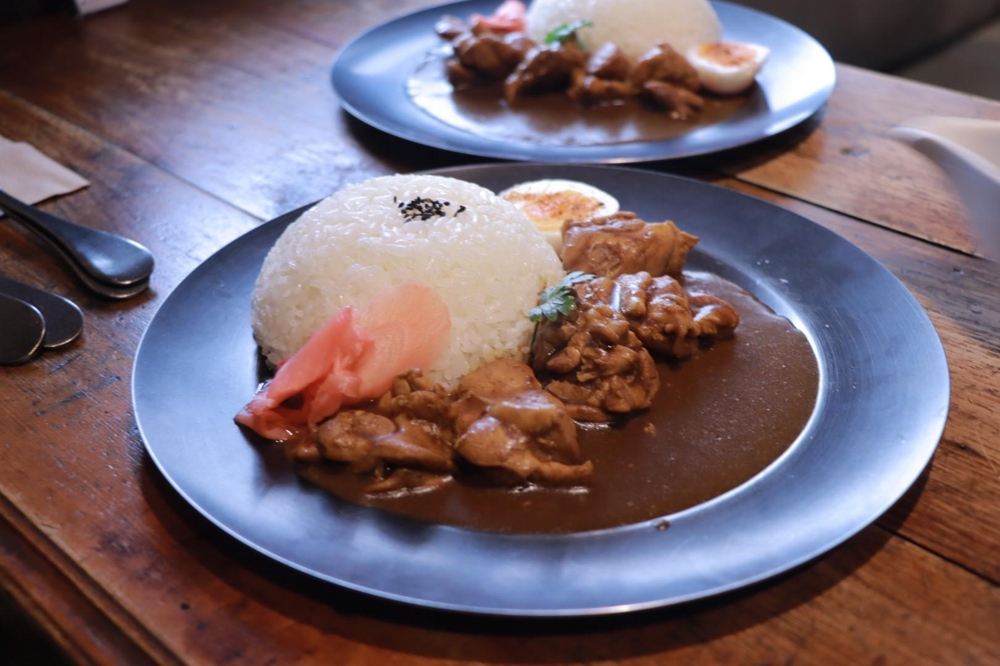

火雞肉飯大對決：阿樓師 vs 民主，誰是你的嘉義味覺英雄？
04 Oct， 2024 / 文、攝: 石佳艷

▴阿樓師火雞肉飯
特此聲明:此文章中，無任何火雞肉飯店受到傷害，純屬作者個人觀點，各位客官請親自體驗~
注意事項:在睡前看此文章可能會肚子餓
嘉義作為台灣的火雞肉飯聖地，擁有眾多的火雞肉飯老店，其中阿樓師火雞肉飯與民主火雞肉飯是兩家備受當地人與遊客青睞的餐廳。雖然這兩家店都專注於提供嘉義經典的火雞肉飯，但在某些角度上，仍展現出各自獨特的風格與特色。本文將從多方角度，進行比較與探討。

一、源起背景
阿樓師火雞肉飯的歷史可以追溯到數十年前，這家店的創始人阿樓師以傳統手藝和對食材的嚴格挑選，打造出令人難以忘懷的火雞肉飯。阿樓師原本在嘉義經營一家小型的街邊攤，因為他的火雞肉飯味道純正、肉質鮮嫩，逐漸積累了穩定的顧客群。隨著名氣增長，阿樓師的火雞肉飯從小攤位發展成了一家正式的餐廳，並且保持著家族經營的傳統。阿樓師火雞肉飯的成功也象徵著一個人憑藉技藝與堅持，在競爭激烈的餐飲業中取得成功的典範。
民主火雞肉飯則是嘉義火雞肉飯界中的另一位重量級選手，名字帶有濃厚的時代意義與象徵。這家店創立於嘉義市區繁忙的民主路上，起源於1960年代，當時社會風氣變遷，許多餐飲業者以不同的方式表達對民主的嚮往與支持，這也成為餐廳名稱的靈感來源。創辦人希望透過火雞肉飯這一道地方小吃，傳遞出對自由和民主的支持精神，這樣的理念深受當地民眾的共鳴。與阿樓師相比，民主火雞肉飯以其社會意涵與經營理念，增添了更多文化和歷史色彩。
二、地理位置
阿樓師火雞肉飯位於嘉義市的文化路上，這條路以熱鬧的夜市文化和各式各樣的小吃店聞名，阿樓師的火雞肉飯在當地經營多年，早已成為吳鳳北路上一個不可或缺的存在。阿樓師的地點不僅方便當地居民和遊客品嚐，也因為周邊的商業活動繁榮，吸引了不少經常來夜市消費的食客。由於地處鬧區，阿樓師經常能夠接待大量的客人，無論是日間還是夜晚，生意都非常興隆。
民主火雞肉飯則位於嘉義市區的民族路。民主路同樣是一條交通便利、商業發達的街道，但與吳鳳北路相比，這裡的氣氛更具當地生活的氣息，少了一些觀光熱點的喧囂。由於位於市中心，民主火雞肉飯的交通條件極為便利，吸引了大量當地居民來此光顧。此外，民族路也鄰近嘉義市的其他重要地標，像是南門市場與崇陽古道，使得來訪的顧客可以順道參觀周邊景點。
三、菜飯類的差異
在火雞肉飯的基本構成上，阿樓師與民主都有相似的基礎：精選的火雞肉絲，淋上香濃的肉汁，再鋪在熱騰騰的白飯上。但兩家餐廳在食材選擇與細節處理上，仍有不同之處。
阿樓師火雞肉飯的特色在於其火雞肉的口感。阿樓師的火雞肉飯強調的是火雞肉的嫩滑度與鮮美度。選用的是火雞胸肉，肉質鮮嫩而不乾柴，經過精心的處理，火雞肉與醬汁的融合度非常高。阿樓師的火雞肉上桌後，往往會讓顧客感受到肉汁的濃郁香氣，並且肉質本身富有彈性，咀嚼時能夠品嚐到多層次的風味。此外，阿樓師的飯粒選擇也講究，米飯煮得軟硬適中，能夠很好地吸收火雞肉汁，增添整體的口感層次。除了火雞肉飯，阿樓師的配菜選擇也非常多樣化，像是酸菜、筍乾、滷蛋等，讓顧客能夠自由搭配，享受不同風味的組合。
民主火雞肉飯則在火雞肉的處理上有所不同。與阿樓師相比，民主火雞肉飯的火雞肉更加強調的是原味的保留。民主使用的是火雞腿肉，這使得他們的火雞肉飯在口感上更加多汁，肉質更加濃郁。火雞腿肉經過特殊的烹調手法，保留了肉中的天然油脂，讓每一口火雞肉都帶有豐富的肉香與油脂感。相較於阿樓師的火雞肉較為清爽，民主的火雞肉飯給人一種更為厚重的口感，非常適合喜歡濃郁風味的食客。米飯的部分，民主的飯粒稍微偏硬，這樣的搭配有助於與火雞腿肉的油脂達成一種平衡，不會讓整體口感顯得過於油膩。而民主最大的特色就是!油蔥爆多!
在配菜方面，民主火雞肉飯的配菜選擇相對較少，但他們提供的滷菜，特別是滷豆干和滷蛋，口感非常入味，這些滷菜的搭配讓餐點的豐富度大大提升。此外，民主火雞肉飯的店內還常常會有一些當季的特製小菜，這些小菜會根據不同季節進行變化，為顧客提供更多元的選擇。

▴ 阿樓師雞肉飯 & 民主雞肉飯▴
除了源起背景、地理位置和菜飯類的比較，還有一些其他方面也值得探討，可以幫助觀眾更深入了解阿樓師火雞肉飯與民主火雞肉飯的差異與特色：
1. 用餐環境與服務
用餐環境和服務質量是許多顧客選擇餐廳的重要因素。阿樓師火雞肉飯與民主火雞肉飯的用餐環境與服務風格都有所不同。
▶阿樓師火雞肉飯：這家餐廳的裝潢風格較為樸實，以舒適為主，典型的台灣老街餐廳風格。由於地處文化路夜市附近，餐廳常常比較熱鬧，尤其是在晚餐時間。店內的座位安排較緊湊，顧客在高峰時段需要稍微等待。阿樓師的服務強調效率，員工動作迅速，這讓用餐過程流暢，但可能缺少個人化的服務。
▶民主火雞肉飯：相比之下，民主火雞肉飯的環境更貼近當地居民日常的餐飲風格，氣氛較為休閒舒適。由於地處民主路，這裡的節奏相對較慢，讓顧客可以輕鬆地享用餐點。民主火雞肉飯的服務風格也較為親切，店員會與顧客進行更多互動，特別是當地的熟客，經常能感受到家常般的親切感。
▴ 阿樓師用餐環境 & 民主用餐環境▴
2.價格性價比
價格是許多消費者考量的因素，尤其是針對火雞肉飯這樣的日常餐點，價格與分量之間的平衡顯得尤為重要。
▶阿樓師火雞肉飯：阿樓師的火雞肉飯價格偏中等偏上，這可能是因為其所處地段是觀光客較多的區域，並且他們對食材的品質要求較高。阿樓師提供的火雞肉飯分量適中，但由於其菜品選擇豐富，顧客可以依照自己的需求搭配額外的配菜，這使得阿樓師的火雞肉飯套餐有很好的靈活性和性價比。
▶民主火雞肉飯：民主火雞肉飯的價格較為親民，符合當地居民日常用餐的需求。相比阿樓師，民主的火雞肉飯分量稍多，而附加的小菜選擇相對較少，這讓顧客能夠以較低的價格獲得飽足感。這種實惠的定價策略吸引了更多經常光顧的當地食客。
▴ 民主菜單 & 阿樓師菜單
3.顧客與口碑
了解顧客群的結構有助於理解一家餐廳的受眾以及它的市場定位。
▶阿樓師火雞肉飯：阿樓師火雞肉飯因這家店在旅遊網站上擁有較多的正面評論，吸引了大批觀光客和外地遊客。除了遊客外，阿樓師也有不少當地的熟客，尤其是那些從小吃到大的人們。
▶民主火雞肉飯：民主火雞肉飯的顧客群主要以當地居民為主。由於其親民的價格和家常風味，吸引了許多嘉義市的上班族和家庭。民主火雞肉飯在本地有著相當好的口碑，特別是在嘉義的老一輩居民中，他們對民主火雞肉飯的味道和歷史有著深厚的情感連結。
4. 創新與傳承
在傳統火雞肉飯的基礎上，餐廳是否在創新方面有所表現，也是值得討論的話題。
▶阿樓師火雞肉飯：阿樓師的火雞肉飯秉持著傳統風味，對於創新的嘗試較少，這可能是因為店家希望保持經典的味道，並維護老顧客的喜好。然而，他們在配菜的多樣性上有一定的靈活性，能夠讓顧客依據個人口味進行搭配選擇，這在某種程度上為餐點增添了現代感。
▶民主火雞肉飯：民主火雞肉飯則在傳承的基礎上，偶爾會推出季節性的創新菜品，特別是在特定節慶時，店家會推出一些限定的小菜或火雞料理變化版本，這不僅吸引了新的顧客，也能給老顧客帶來新鮮感。
▴阿樓師火雞肉飯
總結
這些額外的觀察，從用餐環境、價格、顧客群、創新與傳承，乃至社會參與等不同的角度，讓我們看到阿樓師火雞肉飯與民主火雞肉飯各自的風格與特色更加立體。阿樓師火雞肉飯憑藉其夜市位置、傳統口味和靈活的菜單，吸引了大量遊客和食客；而民主火雞肉飯則憑藉親民價格、厚重口感和社會文化意涵，成為當地居民的心頭好。無論是觀光客還是本地食客，都能在這兩家店中找到屬於自己的嘉義火雞肉飯經典口味喔!
阿樓師火雞肉飯
⎯
地址:嘉義市東區成仁街273號之1
電話: 05 228 2738
營業時間:16:00-00:00
民主火雞肉飯
⎯
地址: 嘉義市東區民族路149號
電話:05 216 2666
營業時間:10:00-20:40
您一定也喜歡.....
You may also like
很感謝當初很傻、很大膽的自己才有現在大家看到的Supiido
04 Oct， 2024

時光復刻員
「嘉義市是一座很方便的城市,我們喜歡騎摩托車載著小朋友一家四口這樣亂逛。」……
Continue Reading新華美西裝社：我想做的事，努力去做，就會達成
03 Sep， 2024
美感觀察家
「如果以三個詞形容你們店或是想成獻給顧客的感覺，會是哪三個詞?」 品牌經理人jimmy道:「我想會是……
Continue Reading